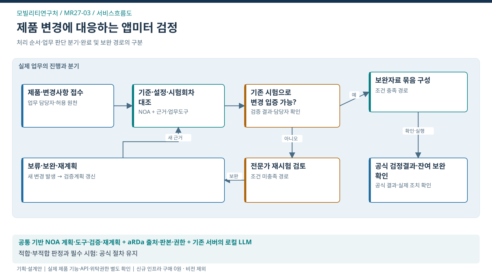

서비스흐름도 · 제품 변경에 대응하는 앱미터 검정
이 도식의 목적 · 처리 순서·판단 분기·완료 및 재계획 경로

도식 원본 확대 · SVG · PPT 삽입용 PNG · 1600×900


핵심 해석
- 대표 사건: 제품·설정·시험회차
- 처별 고유 로직: 변경영향→증빙/재시험 분기
- 조건 분기: 기존 시험으로 변경 입증 가능? → 충족 시 보완자료 묶음 구성 / 미충족 시 전문가 재시험 검토
- 공식 결과: 공식 검정결과·잔여 보완 확인
- 책임 경계: 적합·부적합 판정과 필수 시험: 공식 절차 유지
- 검증 상태: 실제 제품 기능·API·위탁권한·도입효과 미확정
필수 검정의 신뢰성을 유지하면서 변경된 제품에 맞는 입증을 준비하고 반복 보완을 줄임.
- 담당자는 제품·설정·시험회차를 중심으로 근거를 확인하고, AI가 제안한 계획을 검토한 뒤 공식 업무의 결과와 연결함.
- 아래는 제안을 설명하기 위한 화면 구성안임.
설계 예시 · 실제 운영 자료가 아님 · 담당자: 검정 담당자·제작기업 담당자
업무 화면의 핵심 구성
변경 제품 대기함
가상 제품 AM-27 / 설정 v2 / 시험 T-04
확인한 근거
- 제품 설정표 v2: 요금 산정 조건 변경
- 시험 T-04: 설정 v1로 수행
- 기능증빙 v2: 일부 항목 미제출
AI가 준비할 계획
- 설정 v2에 적용되는 기준·검정 종류 확인
- T-04의 적용 가능 범위와 새 검증 필요사항 구분
- 서류 보완과 주행 재시험을 분리해 담당자 검토 요청
담당자가 확인할 결과
공식 검정 결과·보완경로가 정확한 제품·설정·회차와 대사되고 잔여 과제가 인계됨
공식 판단과 승인 권한은 담당자에게 유지
서비스 흐름
| 단계 | 업무와 사용자 행동 | 나오는 결과 |
|---|---|---|
| 1. 대상 확인 | 제품·설정·시험회차와 적용 기준·권한 확인 | 업무 대상·목표·완료조건 |
| 2. 근거 검토 | 원자료의 시점·판본·누락·불일치 확인 | 유효한 근거와 확인할 쟁점 |
| 3. 계획 제안 | 변경사항을 발견하면 영향받는 검증질문·추가 증거·재시험 경로를 다시 구성하고 담당자가 확인한 검정 결과와 연결 | 검토할 계획·필요 자료·후속 담당자 |
| 4. 전문 검토 | 주행 검정 부적합은 해당 공식 주행 절차로, 증빙 미충족은 신청·자료 보완 경로로 구분 | 확정된 조치·보완 또는 보류 이유 |
| 5. 공식 절차 연결 | 검정 검토요청 묶음의 등록·담당자 인계 | 접수/등록 결과와 사건의 일치 확인 |
| 6. 효과 확인 | 반복 보완 사건 비율 / 중요 검증항목 누락률 / 전체 처리기간 | 업무 완료와 국민·기업 편익을 구분한 결과 |
새 근거가 들어오면 달라지는 처리
새 기능이 요금 산정에 영향을 준다는 증거가 들어오면 서류 보완만 하던 계획을 재시험 필요성 검토로 변경.
- 요금 산정 영향 항목을 검증계획에 추가
- 기존 회차 적용 범위를 제한하고 전문가에게 재시험 경로 확인
- 갱신된 증빙 묶음으로 검토 요청 다시 승인
변경된 근거가 승인된 계획에 영향을 주면 이전 승인을 그대로 사용하지 않음. 필요한 검토 단계로 돌아가 근거·계획·승인판본을 함께 갱신함.
화면별 정보와 책임
| 화면 ID | 화면 목적 | 핵심 정보 | 책임 역할 |
|---|---|---|---|
| MR-UI-01 | 변경 제품 대기함 | 제품 ID·설정판본·시험회차·검토기한·현재상태 | 담당자 |
| MR-UI-02 | 버전·시험 증거 비교 | 변경 전후 설정 hash·시험 적용판본·증빙 출처·누락항목 | 담당자·전문가 |
| MR-UI-03 | 검증질문·보완계획 | 검증질문·적용기준·추가증거·재시험 검토·담당자·기한 | 담당자·전문가 |
| MR-UI-04 | 검토요청·공식 결과 대사 | 검토요청 ID·접수번호·제품/회차·공식 결과·승인판본·대사상태 | 승인권자·공식 시스템 |
| MR-UI-05 | 반복 보완·잔여과제 | 반복보완 횟수·비교 사건 분모·기업/담당자 시간·잔여과제 | 현업·평가자 |
예외가 발생했을 때
| 발생 상황 | 실제 서비스의 처리 |
|---|---|
| 자료가 없음 | 대상이 없는 상태와 일부 근거 누락을 구분하고 추가 자료를 요청 |
| 근거가 바뀜 | 영향받는 계획과 승인을 표시하고 필요한 단계부터 재검토 |
| 권한이 회수됨 | 자료 조회·실행을 차단하고 권한 있는 담당자에게 인계 |
| 공식 시스템 응답이 없음 | 결과 미확인으로 유지하고 조회로 대사; 무조건 다시 등록하지 않음 |
| 업무 보류·취소 | 새 실행을 막되 기존 외부 결과는 정식 확인·정정 절차로 처리 |
개인 초안·메모는 조직 사건의 공식 근거와 구분함. 담당자가 제출한 자료만 해당 권한 범위에서 연결하며, 공식 지식 반영은 검수를 거침. 본 제안 화면에는 테스트 상태 선택기와 모의 실행 버튼을 두지 않음.
인수·검수 기준
- AI 적합·부적합 확정, 확인서 발급 권한 대체, 필수 주행시험 생략은 제공 기능에 포함하지 않음.
- 데이터가 비어 있거나 일부 누락돼도 완료 결과를 추정하지 않음.
- 문서 출처·판본·대상·공식 결과를 추적할 수 있어야 함.
- 성과 측정 조건: 동일 검정종류·변경 난이도의 사건 수; 기업 대기시간과 담당자 시간을 함께 기록.
- 본문 16px 이상, 키보드 탐색·명확한 포커스·모바일 재배치·200% 확대를 기본 설계로 적용함. 전체 접근성 인증이나 실제 API/제품 검증 완료를 뜻하지 않음.